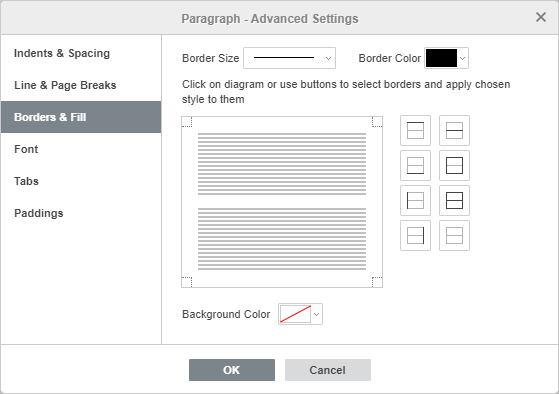
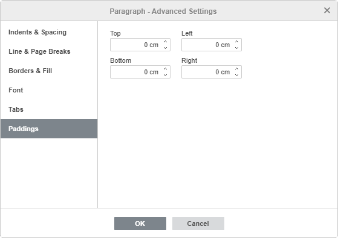
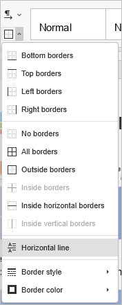

Add borders
Add borders
To add borders to a paragraph, page, or the whole document in the Document Editor:
- Place the cursor within the required paragraph, or select several paragraphs with the mouse or the whole text by pressing the Ctrl+A key combination.
- Click the right mouse button and select the Paragraph Advanced Settings option from the menu, or use the Show advanced settings link on the right sidebar.
- Switch to the Borders & Fill tab in the opened Paragraph - Advanced Settings window.
- Set the needed value for Border Size and select a Border Color.
- Click within the border preset area or use buttons to select borders and apply the chosen style to them.
- Click the OK button.

After adding the borders, you can also set paddings, i.e., distances between the right, left, top and bottom borders and the paragraph.
To set the necessary values, switch to the Paddings tab of the Paragraph - Advanced Settings window:

Add a horizontal line
To add a horizontal line at the current cursor position:
- Place the cursor where the horizontal line should be inserted.
- Switch to the Home tab of the top toolbar.
- Click the Borders icon.
- Choose the Horizontal Line option from the drop-down list.
